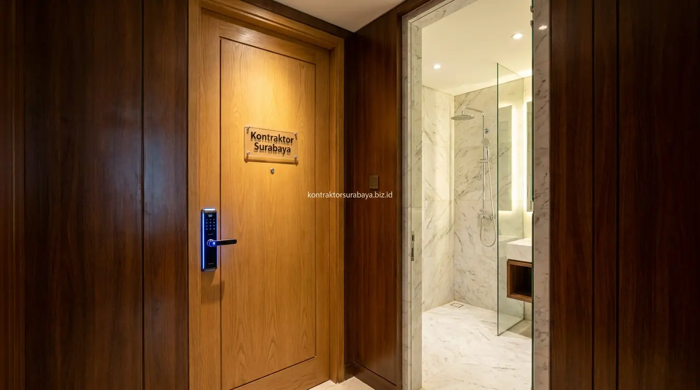

Membangun kos eksklusif di Surabaya adalah pilihan investasi properti yang semakin diminati, terutama mengingat tingginya permintaan hunian sewa dari segmen profesional muda, mahasiswa pascasarjana, dan tenaga ekspatriat di berbagai kawasan strategis kota. Namun, sebelum memutuskan untuk berkomitmen pada proyek ini, diperlukan analisis kelayakan finansial yang cermat agar investasi tidak hanya menghasilkan pendapatan pasif, tetapi juga menghasilkan margin yang sepadan dengan besarnya modal yang dikeluarkan.
Tidak sedikit investor yang tergoda membangun kos eksklusif karena melihat harga sewa yang tinggi tanpa memperhitungkan secara menyeluruh biaya investasi awal, biaya operasional rutin, serta risiko tingkat okupansi yang bisa lebih rendah dibanding kos standar. Pemahaman yang komprehensif tentang semua variabel ini menjadi fondasi keputusan investasi yang solid sebelum mempercayakan pembangunan kepada kontraktor bangunan.
1. Komponen Biaya Investasi Awal Bangun Kos Eksklusif
Biaya lahan, biaya konstruksi dan finishing premium, biaya furnitur serta fasilitas tambahan, dan biaya perizinan adalah empat komponen utama biaya investasi awal dalam membangun kos eksklusif.
- Biaya Lahan: Menjadi komponen investasi awal yang paling bervariasi tergantung lokasi dan luas kavling yang dibutuhkan. Di kawasan dekat kampus atau pusat bisnis Surabaya, harga lahan bisa jauh lebih tinggi dibanding area pinggiran, namun potensi pendapatan sewa yang lebih tinggi di lokasi strategis dapat mengimbangi perbedaan biaya tersebut secara jangka panjang.
- Biaya Konstruksi dan Finishing Premium: Lebih tinggi dibanding kos standar karena penggunaan material dan detail yang lebih baik. Standar finishing kos eksklusif umumnya mencakup pengecatan kualitas premium, pemasangan keramik granit, dan instalasi MEP yang lebih rapi dan terencana, sehingga biaya per meter persegi konstruksi lebih besar dari kos konvensional.
- Biaya Furnitur serta Fasilitas Tambahan: Mencakup perlengkapan kamar dan area bersama yang menjadi nilai jual kos eksklusif. Investasi pada furnitur built-in, AC di setiap kamar, water heater, dan area co-working bersama akan secara signifikan meningkatkan biaya awal, namun juga menjadi daya tarik utama bagi calon penyewa premium.
- Biaya Perizinan: Mencakup dokumen yang diperlukan untuk operasional bangunan dengan fungsi sewa di wilayah setempat, termasuk IMB (atau PBG sesuai regulasi terbaru), izin lingkungan, dan pajak bangunan yang relevan.

2. Fasilitas yang Membedakan Kos Eksklusif dari Kos Standar
Kamar mandi dalam ber-AC, akses keamanan digital, area bersama premium, dan layanan laundry atau kebersihan adalah empat fasilitas yang umumnya membedakan kos eksklusif dari kos standar.
- Kamar Mandi Dalam Ber-AC: Memberi kenyamanan tambahan yang menjadi daya tarik utama segmen penyewa kos eksklusif. Kamar mandi privat dalam setiap kamar menjadi ekspektasi dasar dari calon penyewa kelas menengah ke atas yang tidak ingin berbagi fasilitas sanitasi dengan penghuni lain.
- Akses Keamanan Digital: Seperti kartu akses elektronik atau kode pintu pintar menambah nilai keamanan yang dicari penyewa kelas menengah ke atas. Sistem CCTV di area publik dan sistem intercommunication juga sering menjadi standar di kos eksklusif.
- Area Bersama Premium: Seperti ruang santai, area co-working kecil, atau dapur bersama yang tertata rapi menjadi nilai tambah dibanding kos standar yang lebih fungsional. Fasilitas ini meningkatkan kenyamanan dan rasa komunitas yang banyak dicari oleh penyewa profesional.
- Layanan Laundry atau Kebersihan Tambahan: Memberi kenyamanan ekstra yang membedakan pengalaman tinggal di kos eksklusif. Layanan ini bisa dikelola sendiri atau bermitra dengan penyedia layanan eksternal, dan umumnya menjadi pertimbangan penting bagi calon penyewa yang sibuk.
3. Bagaimana Menghitung Proyeksi Pendapatan Sewa Kos Eksklusif?
Proyeksi pendapatan sewa dihitung dari jumlah kamar dikalikan harga sewa kos eksklusif yang berlaku di sekitar lokasi, kemudian disesuaikan dengan asumsi tingkat okupansi yang realistis untuk segmen penyewa kelas menengah ke atas.
Harga sewa kos eksklusif umumnya lebih tinggi dibanding kos standar, namun segmen penyewanya juga lebih terbatas, sehingga survei terhadap kos eksklusif sejenis di sekitar lokasi menjadi langkah penting untuk memastikan proyeksi pendapatan yang disusun benar-benar realistis terhadap kondisi pasar setempat. Asumsi tingkat okupansi konservatif antara 70–80% lebih bijak digunakan dibanding mengasumsikan penuh sepanjang tahun.
| Komponen | Kos Standar | Kos Eksklusif | Catatan |
|---|---|---|---|
| Biaya Konstruksi per m² | Rp 3,5–5 juta | Rp 6–10 juta | Bergantung spesifikasi material |
| Harga Sewa per Bulan | Rp 700rb–1,5 juta | Rp 1,8–4 juta | Bervariasi per lokasi Surabaya |
| Asumsi Tingkat Okupansi | 80–95% | 65–85% | Segmen pasar lebih terbatas |
| Biaya Perawatan Bulanan | Rendah | Sedang–Tinggi | AC, fasilitas premium perlu servis rutin |
| Target Penyewa | Umum | Profesional, Ekspatriat | Survei kebutuhan pasar lokal wajib |
4. Faktor yang Memengaruhi Kelayakan Finansial Investasi Kos Eksklusif
Segmen target penyewa, lokasi strategis, tingkat persaingan di sekitar lokasi, dan biaya operasional serta perawatan fasilitas premium adalah empat faktor yang paling memengaruhi kelayakan finansial investasi kos eksklusif.
- Segmen Target Penyewa: Seperti profesional muda atau ekspatriat, memengaruhi harga sewa yang dapat ditetapkan secara realistis. Memahami profil penyewa potensial di sekitar lokasi membantu merancang fasilitas yang tepat sasaran sekaligus menentukan kisaran harga sewa yang kompetitif.
- Lokasi Strategis: Dekat area perkantoran atau pusat bisnis meningkatkan daya tarik kos eksklusif bagi segmen penyewa yang dituju. Kedekatan dengan akses transportasi umum, pusat perbelanjaan, dan fasilitas kesehatan juga menjadi pertimbangan penting bagi calon penyewa kelas menengah atas.
- Tingkat Persaingan di Sekitar Lokasi: Memengaruhi kemampuan kos eksklusif menarik penyewa di tengah pilihan yang tersedia. Survei kompetitor di radius 1–2 km dari lokasi rencana pembangunan perlu dilakukan untuk memahami posisi kompetitif sebelum membangun.
- Biaya Operasional serta Perawatan Fasilitas Premium: Perlu diperhitungkan agar tidak mengurangi margin pendapatan secara signifikan. Perawatan AC, servis lift jika ada, pengecatan ulang berkala, dan pemeliharaan area bersama adalah pengeluaran rutin yang harus dimasukkan ke dalam proyeksi cashflow.
5. Menyusun Simulasi Kasar Kelayakan Investasi Sebelum Konsultasi RAB
Survei harga sewa kos eksklusif di sekitar lokasi, menentukan skala fasilitas yang akan disediakan, menghitung estimasi biaya per kamar, dan memproyeksikan skenario okupansi konservatif adalah empat langkah menyusun simulasi kasar kelayakan investasi sebelum konsultasi RAB detail.
- Survei Harga Sewa Kos Eksklusif di Sekitar Lokasi: Memberi gambaran awal mengenai potensi pendapatan yang realistis untuk segmen ini. Data ini dapat dikumpulkan melalui platform properti online atau survei langsung ke kos-kosan sejenis yang sudah beroperasi.
- Menentukan Skala Fasilitas yang Akan Disediakan: Membantu memperkirakan proporsi biaya investasi awal secara lebih akurat. Keputusan apakah akan menyediakan parkir basement, kolam renang bersama, atau gym kecil akan sangat memengaruhi total biaya pembangunan.
- Menghitung Estimasi Biaya per Kamar: Membantu menyusun proyeksi total investasi yang dibutuhkan secara keseluruhan. Biaya per kamar dapat diestimasi dari luas kamar dikali biaya konstruksi per m², ditambah alokasi proporsi biaya area bersama dan fasilitas pendukung.
- Memproyeksikan Skenario Okupansi Konservatif: Memberi gambaran yang lebih realistis dibanding asumsi okupansi penuh sepanjang tahun. Skenario dengan tingkat hunian 70% sudah lebih dari cukup untuk digunakan sebagai dasar perhitungan break even point awal.
6. Kesalahan yang Membuat Analisis Kelayakan Investasi Kos Eksklusif Meleset
Mengabaikan biaya perawatan fasilitas premium, menyamakan target pasar dengan kos standar, tidak mempertimbangkan risiko okupansi lebih rendah, dan tidak melakukan survei harga sewa kompetitor adalah empat kesalahan yang membuat analisis kelayakan investasi kos eksklusif meleset.
- Mengabaikan Biaya Perawatan Fasilitas Premium: Membuat proyeksi pendapatan bersih menjadi lebih optimis dari kondisi sebenarnya. Kos eksklusif dengan banyak fasilitas berteknologi tinggi membutuhkan anggaran perawatan yang tidak bisa diabaikan agar fasilitas tetap terjaga dalam kondisi prima.
- Menyamakan Target Pasar dengan Kos Standar: Berisiko membuat strategi harga dan fasilitas tidak sesuai dengan segmen yang sebenarnya dituju. Investasi di fasilitas premium hanya akan memberikan nilai maksimal jika ditawarkan kepada penyewa yang memang menghargai dan mampu membayar standar tersebut.
- Tidak Mempertimbangkan Risiko Okupansi Lebih Rendah: Akibat segmen pasar yang lebih sempit dapat membuat proyeksi pendapatan terlalu optimis. Fase pengisian hunian di awal operasional kos baru umumnya membutuhkan 3–6 bulan hingga mencapai tingkat hunian yang stabil.
- Tidak Melakukan Survei Harga Sewa Kompetitor: Membuat penetapan harga sewa berisiko tidak sesuai dengan kondisi pasar aktual di lokasi tersebut, baik terlalu tinggi sehingga sulit menarik penyewa, maupun terlalu rendah sehingga tidak menutup biaya operasional secara optimal.
"Analisis di atas hanya sebagai kerangka awal—kelayakan finansial yang lebih akurat memerlukan survei lokasi dan data pasar sewa yang spesifik pada segmen kos eksklusif yang direncanakan." — Erlang Sinatrya, Lead Project Engineer Kontraktor Surabaya
Memahami seluruh variabel kelayakan finansial sebelum membangun adalah langkah investasi yang bijak dan bertanggung jawab. Pelajari cakupan layanan konstruksi bangunan pada halaman jasa kontraktor bangunan, atau lihat ragam layanan lain pada halaman layanan kami.